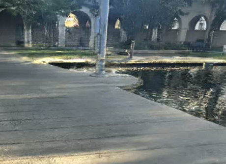

Vision-based navigation framework for mobile robots
Currently developing an end-to-end computer vision pipeline that transforms monocular camera recordings into actionable navigation data for autonomous robots. The framework reconstructs 3D environments using Gaussian Splatting, extracts traversability maps, and performs optimal path planning. The project integrates 3D reconstruction, perception, and planning into a unified system for real-world robotic navigation at Caltech’s Center for Autonomous Systems and Technologies (CAST).
PythonC++LinuxDockerBash/ShellCOLMAP3DGSTraversability mappingROS2Path PlanningRVizGazebo